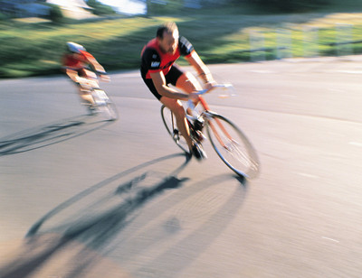

运动究竟是如何让我们保持年轻的
摘要 : 一项关于运动对衰老影响的最新研究表明，从生理学角度讲，经常运动的老年人更接近于年轻人。我们一直以为，随着岁月的流逝，体能的下降不可避免，但这一新发现表明，上述那些观点可能有很多并不正确，我们年龄几何在很大程度上取决于我们自己。

一项关于运动对衰老影响的最新研究表明，从生理学角度讲，经常运动的老年人更接近于年轻人。我们一直以为，随着岁月的流逝，体能的下降不可避免，但这一新发现表明，上述那些观点可能有很多并不正确，我们年龄几何在很大程度上取决于我们自己。
老龄化对于我们来说依旧是一个十分神秘的过程。过去的许多科学研究都表明，随着年龄的增长，身体和细胞中的许多进程都会出现不利的变化。但科学一直未能明确发生这些变化的主要原因是时间的推移还是(至少从一定程度上说)个人的生活方式。如果是前者，它们就是每个人从出生起就不可避免的;但如果是后者，这就意味着，它们可以被改变。
在考虑运动量不足这个因素时，这个谜题显得尤其复杂难解。当下的老年人往往容易久坐不动，这种生活习惯会影响健康，因此很难区分运动量不足的后果和单纯因为年纪渐长造成的影响。
本周发表于《生理学杂志》(The JouRNAl of Physiology)上的新研究中，英国伦敦国王学院(King’s College London)和伯明翰大学(University of Birmingham)的科学家们决定使用一种不同的方法。
他们选择了坚持大量运动的健康老年人作为研究对象，这样就把运动量不足这个因素从研究中去除了。
该研究的责任作者，伦敦大学国王学院人类和航空航天生理科学中心(Centre of human and Aerospace Physiological sciences)主任史蒂芬·哈里吉(Stephen Harridge)说：“我们希望了解在最佳情况下，当我们衰老时身体的功能运作会是怎样的。”
为了实现这个目标，科学家们招募了年龄介于55岁至79岁之间，且经常骑自行车的85名男性和41名女性。这些志愿者们都是正儿八经的骑车爱好者，但并非竞技运动员。参与研究的男性必须能在六个半小时内骑行至少62英里，女性则需要能在五个半小时内骑行37英里，对于老年人而言，能达到这个标准通常身体都非常强健。
科学家们对每名志愿者都进行了大量生理和认知测试。他们测定了每名骑车运动者的耐力、肌肉量和力量、蹬力、新陈代谢健康、平衡力、记忆力、骨密度和反射等，还要求志愿者们完成名为“计时起立行走(Timed Up and Go)”的测试，即，不借助手臂的力量从椅子上站起，快步走出大约10英尺的距离，然后转身走回，再度坐下。
研究人员对参与研究的各位骑车运动者的测试结果进行了两两比较，还将这些数据与理论上正常衰老下的基准数据进行了比较。如果某一特定测试的结果在所有年龄段的骑车运动者中大致相同，那么研究人员就认定该指标更多地取决于体育运动，而不是年龄。
分析结果证明，年龄对这些骑车运动者的影响并不明显。从几乎所有的指标上都能看出，数十年来，他们的生理机能保持得相当稳定。在这方面，他们与同龄人之间的差距远远大于他们与年轻人之间的差距。就整个群体而言，哪怕是其中年纪最大的骑车运动者的平衡力、反射、新陈代谢健康和记忆力都处于年轻人的水平。
他们的“计时起立行走”测试的结果就是一个典范。哈里吉博士指出，许多老年人都至少需要7秒才能完成任务，如果需要9秒或10秒，则认为他们的体制较弱。但在该研究中，即便是年纪最大的骑车运动者平均也仅需5秒就能完成任务，这“完全是健康的年轻成年人的能力范畴”，论文作者写道。
然而，研究也证明，衰老的某些方面确实不可避免。年纪最大的骑车运动者的肌肉力量和肌肉量都少于50多岁和60岁刚出头的参与者，且他们的整体有氧能力也有大幅降低。哈里吉博士说：就算进行体育锻炼，年龄也确乎会在一定程度上降低我们的耐力和力量。
但即便如此，研究中年纪最大的骑车运动者的这两项指标也均高于70岁或70岁以上人群的平均水平。
总而言之，研究数据表明，在经常进行体育运动的人中，衰老程度完全不同。
哈里吉博士说：“如果你把这个数据集交给临床医生，他很可能无法根据其中某一骑车运动者的测试结果预测出其真实年龄。”单就纸面数据而言，这些人看起来都像是年轻人。
当然，哈里吉博士也承认这项研究的基础只是对一个不寻常的老年人群体的一次大致检查。他和同事们计划在五到十年内对这些志愿者再次进行测试，从而为研究运动对衰老的持续效果提供更有用的信息。
哈里吉博士已经年近五旬，而且也是个狂热的骑车运动爱好者。他指出，就算目前尚未获得进一步的结果，这项研究也能表明，“体育运动能让你身体内部的机能更接近于年轻人。”
作者：浮游 点击：1566次
- 最新资讯
- 国外资讯
- 国内资讯